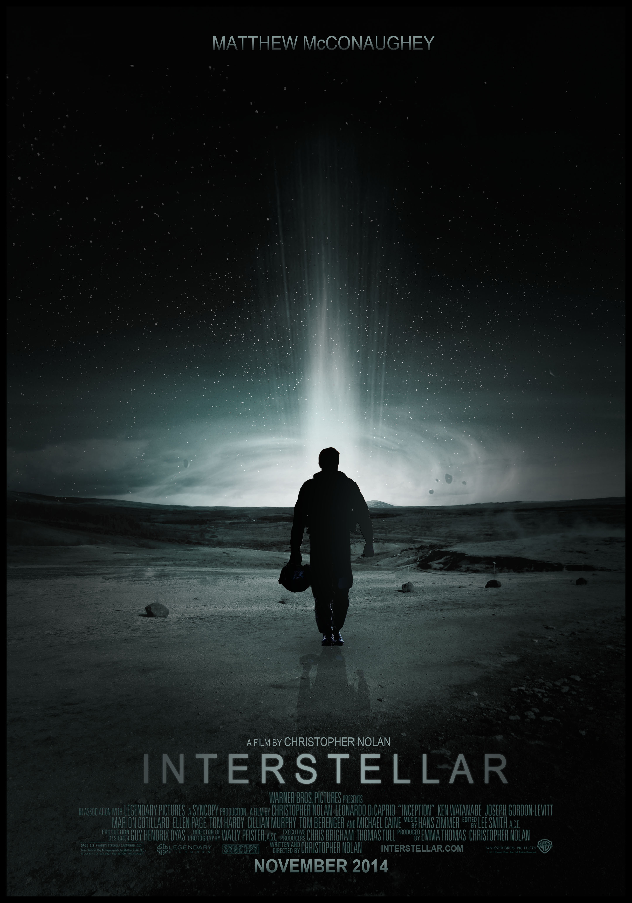

My Top 5 Movies by Genre
1. Interstellar (Top Sci-Fi Movie)
Interstellar is one of the most powerful sci-fi movies I've ever seen. It explores space and time in a way that really makes you think, but it's also emotional and beautifully done. It stuck with me long after watching.
2. 300 (Top War Movie)
300 stands out for its unique style and intense energy. The way it tells the story of the Spartan warriors is bold and unforgettable. It's not just about the action — it's about courage, pride, and sacrifice.
3. Goodfellas (Top Mob Movie)

Goodfellas gives a raw and detailed look into the world of organized crime. What makes it so good is how real everything feels — from the characters to the story. It's a must-watch for anyone into crime movies.
4. Saw (Top Horror Movie)

Saw is one of the few horror movies that actually made me feel nervous. It's not just scary — it's smart and really keeps you guessing. The concept and the way the story unfolds makes it stand out in the genre.
5. The Silence of the Lambs (Top Crime Thriller)

This movie is creepy in the best way. The characters such as Hannibal Lecter are unforgettable. It's intense, smart, and has one of the best cat-and-mouse stories I've seen in a thriller.